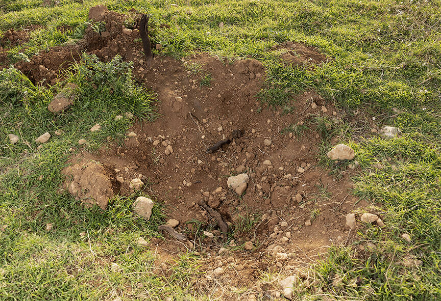
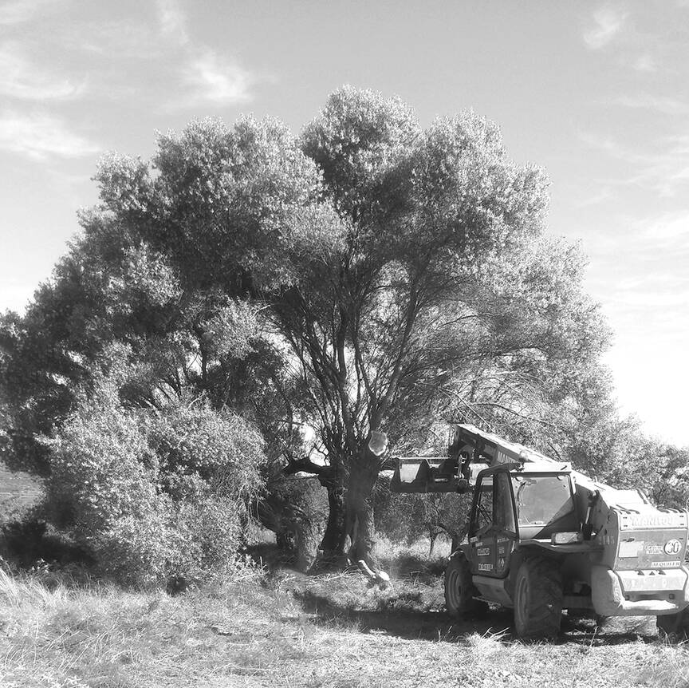
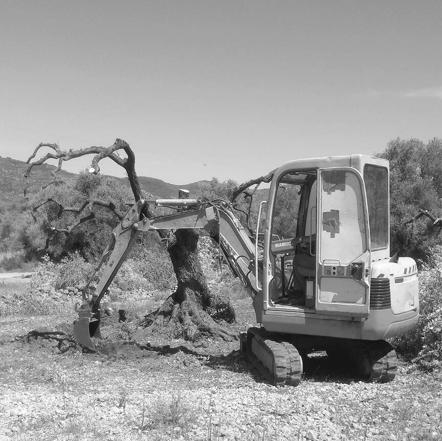

Marianne Gambaro, "Darkness and light"
In September 2020 I packed my suitcases and drove towards the West, heading to my new home in the Netherlands. After long twelve hours drive, around midnight, I saw a glow speading over the landscape, looking just like it was a sunrise.
As it turned out, my tired senses were fooled by the biggest glasshouse colony in the world – a glow that tricked not only me, but the entire natural world.
We live in times when majority of people have never experienced the view of milky way. As a civilisation we perceive darkness as a threat. We associate it with blindness, fear, mystery, something out of control. These negative associations create fundaments for the reality where the levels of light pollution raises fastest in the history of the Earth. Levels of melationin in blood gets dangerously low, species crucial for the ecosystem die out and starry nights are no longer present in our lives.
By loosing starry nights, we have also lost something very human: a feeling of interconnectedness that directly affects our psychology and behaviours. My frst experience of starry nights brings the feelings of nostalgia and childhood memories.
The project has started as an investigation of light pollution, but became a personal story of looking for what's almost lost. It's a story of fears to be tamed, of a primal desire to get closer to something universal, bigger than myself, and hope that the narrative can be turned around.
It is not light that makes us see, and darkness that makes us blind.